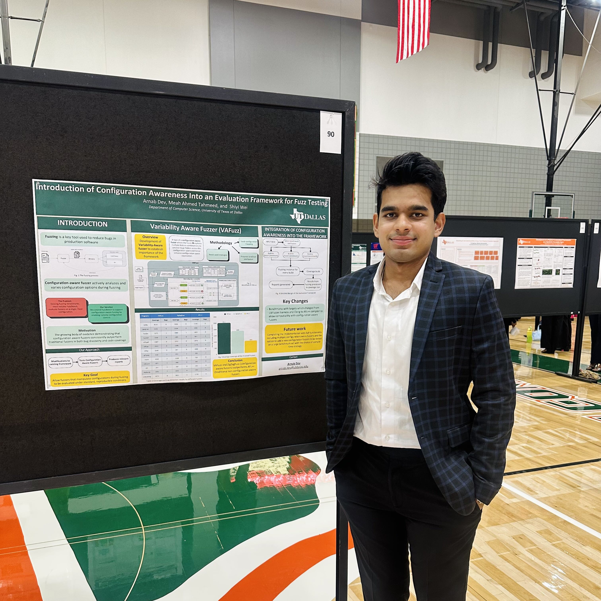

Research
I research software security with a focus on fuzz testing, static analysis, and variability-aware testing. My work aims to improve software reliability and security through automated testing techniques.

FuzzBench++: Configuration-Aware Fuzzing Benchmarks
In this work, we identify critical gaps in current benchmarking infrastructure that prevent fair and systematic comparison of configuration-aware fuzzers. We extend Google’s FuzzBench to support configuration-aware fuzzing, using Docker containers to orchestrate scalable experiments.
Return to Home.